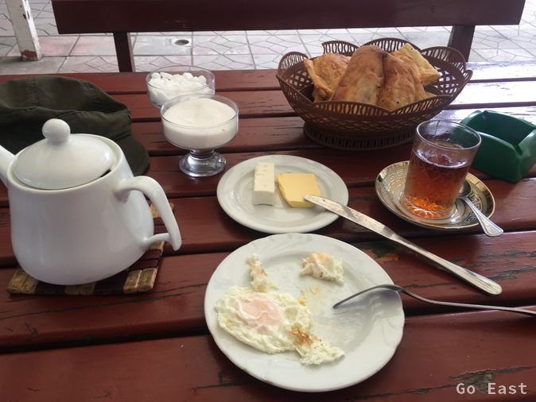
Frühstück in Astara
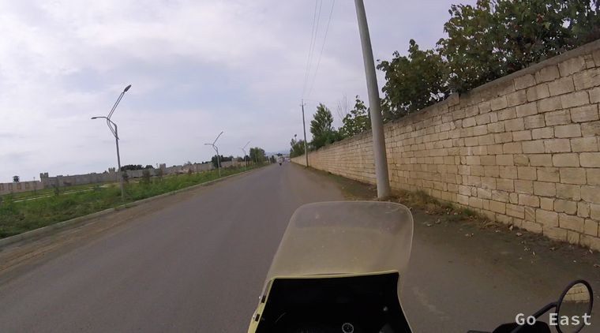
Aufbruch zur iranischen Grenze
Wir suchen gegen 7:30 nach Frühstück und wecken quasi den Restaurantbesitzer.
So früh sind sonst nur die Frauen unterwegs die mit großen Reisigbesen die Straße fegen. Wir fahren los und sehen die Grenzgänger auf der Brücke gehen und sehen auch wie die Frauen sich schnell das Kopftuch zurechtmachen bevor sie den iranischen Grenzposten erreichen. Im Iran ist Kopftuch für Frauen obligatorisch.
Die Ausreise aus Aserbaidschan geht flott vonstatten. Beim Posten von Iran werden wir gleich von zwei jungen Männern empfangen, die sehr höflich sich unser annehmen und quasi alle Formularitäten erledigen und das im Laufschritt. Wir sehen nur einmal kurz einen Zollbeamten, der in unsere Taschen sehen wollte. Alles sehr höflich und korrekt.
Auch den Geldwechsel wickeln wir über die Zwei ab und zuletzt lassen wir uns auch noch iranische Sim-Karten ins Handy einsetzen und aktivieren. Mit dem Grenzübertritt hat sich auch die Zeit um eine weitere halbe Stunde verschoben. Wir haben jetzt 2,5 Std. Unterschied zu Deutschland.
Wir fahren los Richtung Pass und Ardabil und finden alsbald eine Tankstelle. Spritpreis umgerechnet 0,21 Eur, da kann man nicht meckern. Der Pass ist fantastisch und auf 1.500m Höhe ist die Temperatur auch angenehm bei ca. 25 Grad.
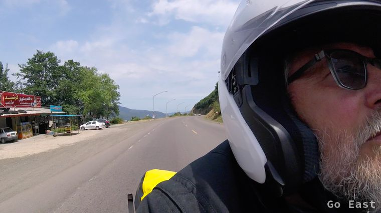
Pass-Straße
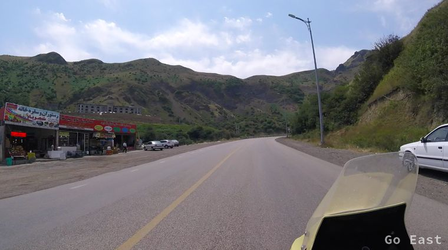
Pass-Straße
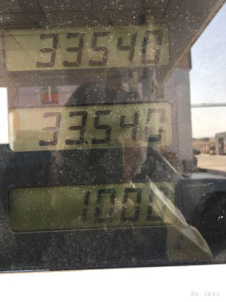
Spritpreis 1.000 Real = 0,21 Eur
Wir pausieren in einem Restaurant an der Straße und nehmen auf Teppichen Platz und essen einmal wieder Kebab mit Salat.
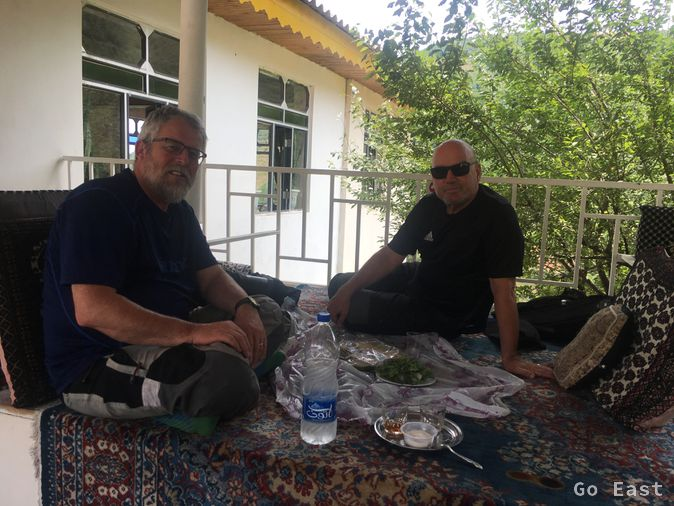
Rast auf Perser
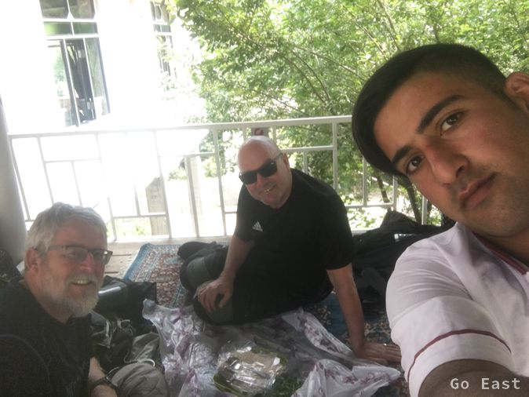
Selfie muss sein
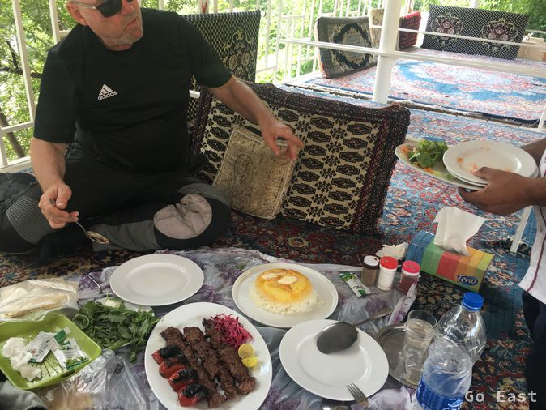
Mittagessen
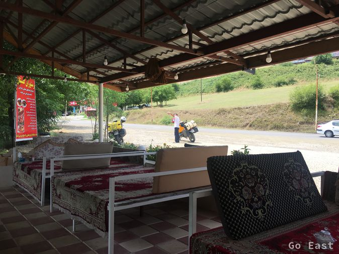
Selfie mit der Maschine ist für viele einfach obligatorisch
Das Straßenbild hat sich gewandelt. Keine Lada und Mercedes mehr, dafür alte Hauben Mercedes LKW und MAN, viel Renault, Peugeot und Hyundai, die allesamt bei Khodro in Lizenz gefertigt werden.
Die Landschaft ist abwechslungsreich und das Fahren macht viel Spaß, da die Iraner im Gegensatz zu den Aserbaidschanern sehr defensiv fahren.
Wir machen nochmals Halt bei einem Truckstop, trinken Tee und kommen schnell ins Gespräch mit den Leuten. Nach ein paar Gläser Tee und Selfies anderer Leute mit uns später, fahren wir weiter Richtung Zanjan durch Schluchten und über Höhen mit gravierenden Temperaturen. Von 28 Grad bis 38 Grad in den Senken ist alles vorhanden.
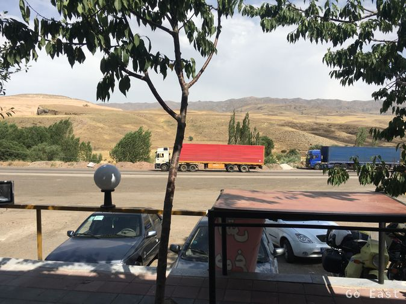
Unterwegs nach Zanjan
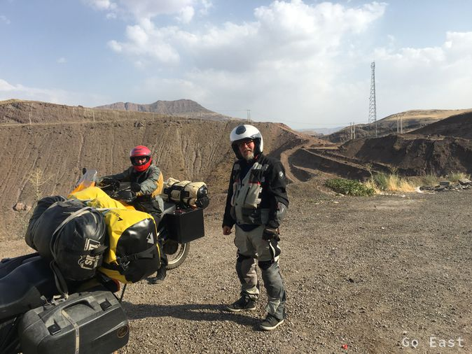
Unterwegs nach Zanjan
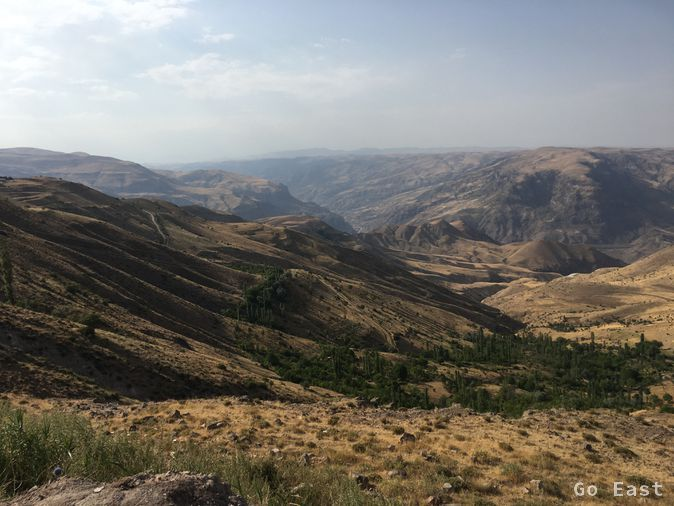
Unterwegs nach Zanjan
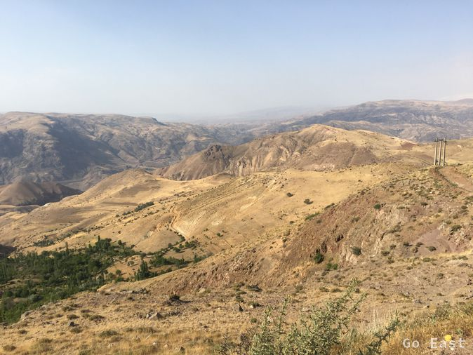
Unterwegs nach Zanjan
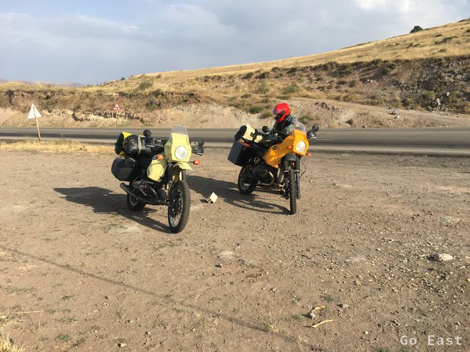
Unterwegs nach Zanjan
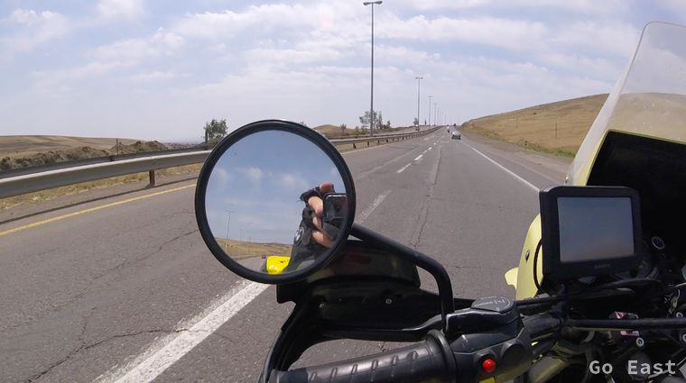
Unterwegs nach Zanjan
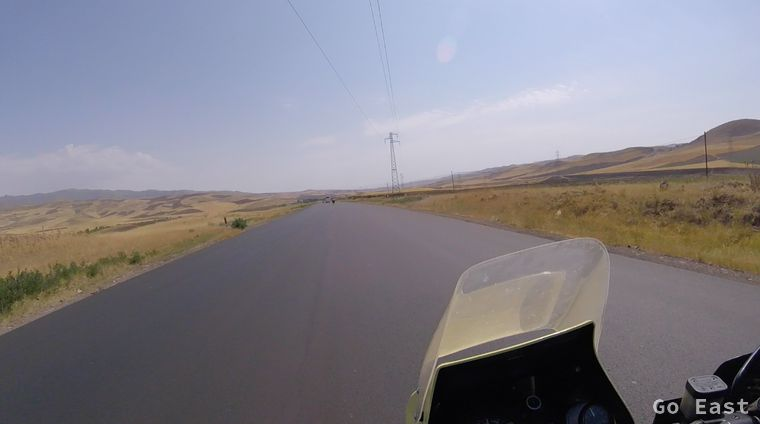
Unterwegs nach Zanjan
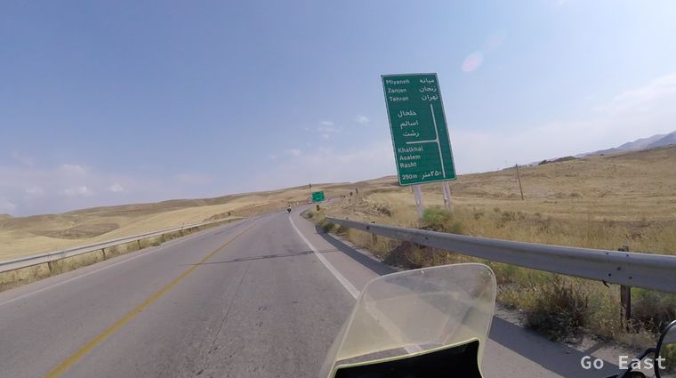
Unterwegs nach Zanjan
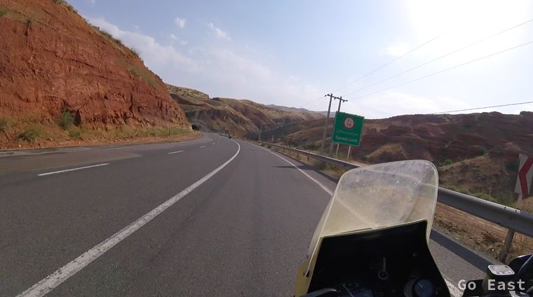
Unterwegs nach Zanjan
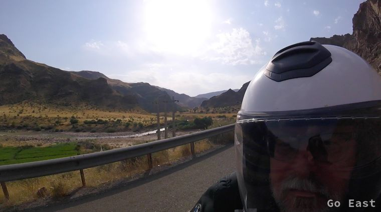
Unterwegs nach Zanjan
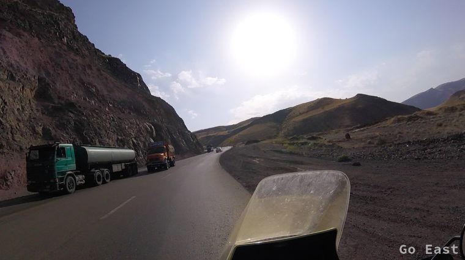
Unterwegs nach Zanjan
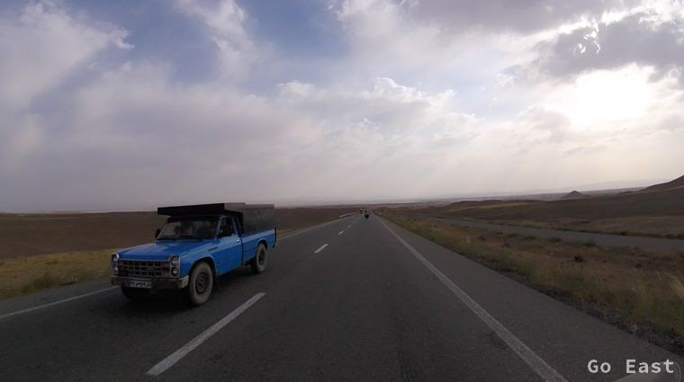
Unterwegs nach Zanjan
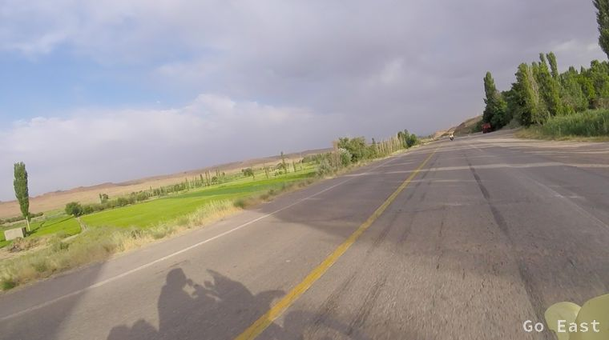
Unterwegs nach Zanjan
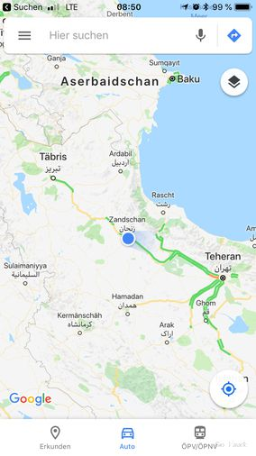